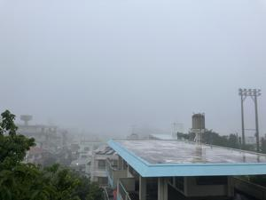
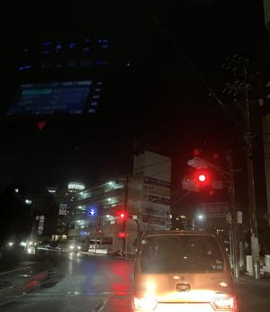

うるがいの話 ある日
最新: 今日は濃霧【うるがいの話 ある日】とは 一日だけのプログです
『うるがいの話』の最新一日だけのプログで、通信料が少なく経済的だ。カニの画像をクリックすると全ての日付が載る『うるがいの話』サイトを表示します
|
|
【うるがいの話】 うるがい(ｳﾙｶﾞｲ urugai)とは、『もずくがに』の名前でとても大きくなります。 |
|---|---|
|
|
【カミマヤーの話】 猫のことを方言でマヤーといいます。カミマヤー（kamimayaa）とは、神の猫のことです。 |
|
【たながぁの音楽】 たながぁ（ﾀﾅｶﾞｰ tanagaa）とは手長えびのことで、何種類かあり大きいのは車 エビぐらいになります。 |

|
【ぶながぁの話】 ぶながぁ(ﾌﾞﾅｶﾞｰ bunagaa)とは、赤い髪の毛、赤い身体、そして身長は１ｍ２０ｃｍ ぐらい、川の蟹を食べているの目撃された。場所は沖縄県国頭郡大宜味村のと ある村僕の隣近所に住んでいる爺さんから、聞いた話です。 |
|
|
【ギーマの話】 ギーマ(giima)とは、山原の里山に咲くスズランに似た、 花を付けます。実は食べられます、 気が付くと口の周りが紫になっています。 |
2024年06月16日 (日）今日は濃霧
15:18
 
朝早く戸をあけようと外へでると濃霧で視界が悪い。飛行機の便にも影響し
ているのだろう。
【速報】濃霧で那覇空港に着陸できず 発着の６便が欠航 １１便が目的地
変更 沖縄（１６日午後１時半） 琉球新報社
昨夜コドモの飛行は２０時１５分着の予定だったのだが家を出る前に航空会
社の運行状況を確認すると２０分遅れ２０時３５分になっていた。空港の駐
車場へは、２０時１５分に到着する。ロビーで女子バレーの試合をボーとみ
る。到着予定を過ぎても、コドモから連絡がない。ん？、航空会社の運行状
況を確認すると、到着時刻が２１時に変更されていた。あっさりと勝ったバ
レーの試合、どうでもいい選手へのインタビューをボーとみる。コドモから
到着の連絡があったのは２１時０３分だった。空港近辺には近づいたけど雷
雲のせいで、３０分程空を飛んでいたとのこと。そういえば、私も経験があ
る。コドモは、行き帰りとも雨に影響を受けた不運なやつである。はて？今
日は父の日だが・・・・・、夜には海外から帰ってくる子供を迎えにいく。
１５時１３分 ビットコインの総資産 ￥３０、２１６（↓１３）